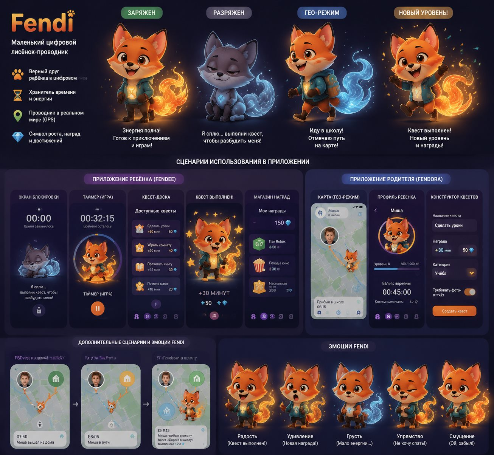
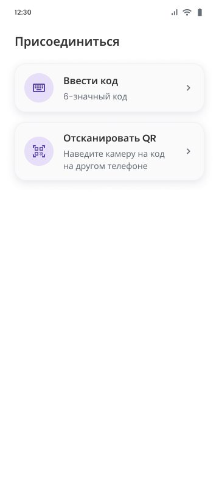
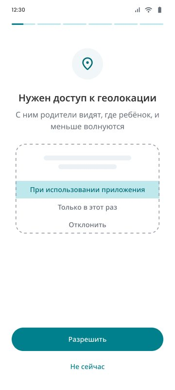
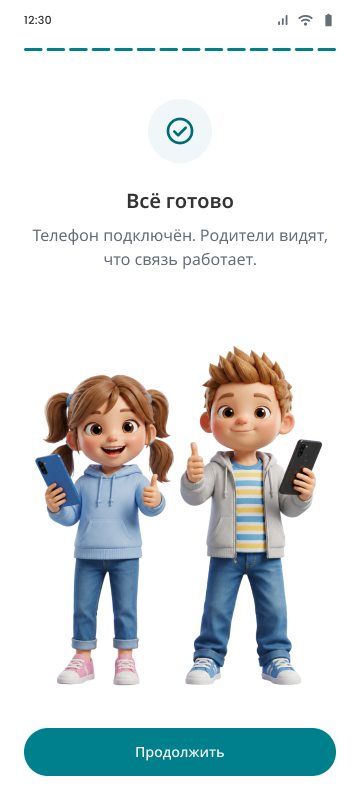
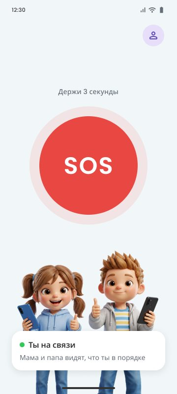

ТЗ для дизайнера: на каких экранах детского приложения появляется лисёнок Fendi, что он там делает и что нужно отрисовать. Здесь же два кликабельных прототипа.
В MVP у Fendee нет квестов, таймера и наград: только подключение к родителю, разрешения и экран с кнопкой SOS. Поэтому маскот живёт там, где ребёнку действительно нужна помощь.
Онбординг: знакомство, «Телефон подключён», раскрытие данных, разрешения, «Всё готово». И главный экран — вместо нынешней иллюстрации с детьми. На вводе кода и сканере QR его нет.
Ребёнок видит в приложении того же героя, что на баннерах в сторе. Fendi помогает пройти семь системных экранов с разрешениями, где отвалиться проще всего. А статус связи становится понятен без чтения.
Хвост-энергия из концепта в MVP показывает не экранное время, которого пока нет, а связь с родителями. Горит — на связи. Тускнеет — тебя не видно. Голубой — нет сети. Серый — не на связи.
9 поз и 5 вариантов хвоста на прозрачном фоне, со слоями. Для MVP хватит статики, анимация — отдельной задачей. Аксессуары к разрешениям — если останется время.
Нумерация как в макете, раздел «Fendee · заготовки → Пэйринг». Онбординг часто проходит родитель с телефоном ребёнка в руках. Поэтому Fendi обращается к ребёнку, но так, чтобы взрослому не было неловко: коротко и без сюсюканья.
Почему не везде. На вводе кода и сканере QR человек смотрит на цифры и в камеру, половину экрана занимает клавиатура или видоискатель — персонаж там только мешает. Профиль — это форма с полями, маскот не добавит ей смысла.
Экраны собраны по макету: те же тексты, цвета и шрифт Poppins. Fendi здесь — векторная схема, чтобы показать место, размер, позу и поведение хвоста. Это не финальная отрисовка: персонаж рисуется по концепту и баннерам сторов.
Жмите кнопки на экране или выбирайте шаг ниже. На разрешениях Fendi показывает лапой на пункт, который надо выбрать в системном окне.
Переключайте состояния связи. Кнопку SOS можно зажать на 3 секунды — Fendi перейдёт в состояние «Сигнал отправлен».
Реплики — черновик для обсуждения, финальный текст согласуем отдельно. Коды поз (F-01…) — из раздела «Что отрисовать».
| Экран | Что делает Fendi | Поза | Хвост | Реплика | Приоритет |
|---|---|---|---|---|---|
| 01 Splash | Выглядывает из-за логотипа-щита на полсекунды и прячется | Голова F-01 | — | — | P2 |
| 02 Подключение | Знакомится и говорит, что сейчас будет. Стоит под карточками способов, в пустой части экрана | F-01 машет лапой, радость | Полный | «Привет! Я Фенди. Давай подключим твой телефон к маме или папе» | P1 |
| 05 Телефон подключён | Радуется первому шагу. Заменяет галочку над заголовком | F-02 прыжок, лапы вверх | Вспышка → полный | — (хватает заголовка) | P1 |
| 06 Раскрытие информации | Молча сидит внизу, не отвлекает от текста | F-03 сидит, спокойный | Полный, без мерцания | Нет. Этот текст — раскрытие данных по правилам Google Play, его нельзя пересказывать или прятать за персонажем | P1 |
| 07–12 Разрешения | Стоит под макетом системного окна и показывает лапой на подсвеченный пункт, чтобы ребёнок нажал «Разрешить», а не «Только в этот раз». Иконка разрешения вверху остаётся | F-04 показывает вверх. P2 — аксессуар по смыслу: метка, рюкзак, кроссовки, колокольчик, будильник, батарейка | Полный | Нет — текст уже на экране | P1 аксессуары P2 |
| 13 Настройка завершена | Празднует. Заменяет иллюстрацию с детьми | F-02 + искры | Максимум, вспышка | «Я на связи!» (по желанию) | P1 |
| 14 Главный экран | Показывает статус связи позой и хвостом. Заменяет иллюстрацию с детьми во всех пяти состояниях — подробно в следующем разделе | F-05 … F-09 | По состоянию | Нет — статус в карточке | P1 |
Пять состояний из макета («Состояния главного экрана»). Текст в карточке не меняется. Fendi стоит на месте иллюстрации с детьми, карточка статуса перекрывает ему ноги — как сейчас у детей.
| Состояние | Fendi | Хвост | Движение | |
|---|---|---|---|---|
| ● Ты на связи | F-05. Спокойно улыбается, время от времени машет лапой | Полный тёплый огонь | Дыхание, моргание, хвост мерцает, взмах лапой примерно раз в 6 секунд | |
| ● Сигнал отправлен | F-06. Собран, лапа на груди — «я рядом». Не улыбается во весь рот, никаких конфетти | Яркий и ровный | Только дыхание. Хвост не мерцает, реакций на тап нет | |
| ● Тебя не видно | F-07. Ищет: лапа козырьком, смотрит в сторону | Тусклый, полупрозрачный | Хвост медленно гаснет и разгорается | |
| ● Нет связи | F-08. Поднял телефон над головой, ловит сеть | Холодный голубой | Телефон покачивается | |
| ● Ты не на связи | F-09. Встревожен, уши прижаты | Погасший серый | Нет |
| Код | Поза и эмоция | Где | Приоритет |
|---|---|---|---|
| F-01 | Машет лапой, радость. Отдельно — голова для splash | 02, 01 | P1 (голова P2) |
| F-02 | Прыжок, обе лапы вверх, восторг, искры | 05, 13 | P1 |
| F-03 | Сидит, спокойный, внимательно слушает | 06 | P1 |
| F-04 | Стоит, показывает лапой вверх, дружелюбный | 07–12 | P1 |
| F-05 | Стоит, спокойная улыбка (лапа для взмаха — отдельным слоем) | 14 · на связи | P1 |
| F-06 | Собран, лапа на груди, серьёзный и тёплый взгляд | 14 · сигнал отправлен | P1 |
| F-07 | Лапа козырьком, смотрит в сторону, немного растерян | 14 · тебя не видно | P1 |
| F-08 | Держит телефон над головой, сосредоточен | 14 · нет связи | P1 |
| F-09 | Стоит, уши прижаты, встревожен | 14 · не на связи | P1 |
| Хвост ×5 | Полный · яркий ровный · тусклый · холодный голубой · погасший серый. Отдельным слоем, чтобы ставился к любой позе | все | P1 |
| Аксессуары ×6 | Метка на карте, рюкзак, кроссовки, колокольчик, будильник, батарейка — к F-04 | 07–12 | P2 |




